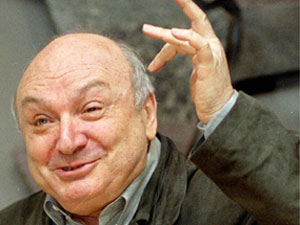
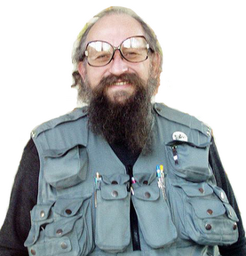

Distance Typing From Demonstrative Functions¶
Note
Here Gulenko is talking about Model G so demonstrative is the 5th function, it’s the 2nd function of Model A.
In the model of the TIM, the 5th position is called demonstrative function. This is the most powerful internal function, i.e. a function of short radius of action meant for application within its own territory. When it demonstrative function is observed from a distance, it often seems inadequate, as if awkwardly protruding. When demonstrative function is an intuitive one, it yields quite a comical look, since it is the most detached mental function. This phenomenon can be observed with four rational intuitive types: EIE, LIE, LII, and EII.
Lets look at some characteristic examples. In the first photo, one can see a demonstratively expressed T-state (Ni / intuition of time) in eyes of Leonid Chernovetsky, type LIE, for which he has been nicknamed “Lenya-space”.
The second picture is also an example of demonstrative intuition, but this is an I-state (Ne / intuition of opportunities). It captures a moment of an interview with the well-known economist Mikhail Khazin, type LII.
As you can see, the typical trait of intuition in demonstrative position is a defocused look. In the case of dynamic intuition of time “T” (Ni), the look is directed forwards and upwards; it is as if floating or plowing through the outer space. Static intuition of opportunities “I” (Ne) is characterized by a look that stops at the mid-point - this is a look that looks “through you”.
The 5th function is key for interpersonal compatibility, since the person rarely makes concessions concerning this area. By means of this function, a representative of a type delineates personal territory and sends easily discernible signals of his or her presence. One must acknowledge the 5th function; people have to accommodate and adjust to it while interacting at close distance, or a trusting relationship between them won’t be established.
Demonstrative Sensing¶
Manifestations of demonstrative sensing include a tense facial expression and a focused gaze, which is concentrated on some external point or object. This applies, not without some variation, to all rational sensing types: LSI, ESI, LSE, ESE. This focused expression is much more aesthetically pleasing and attractive than the demonstration of detachment of rational intuitive types. Such look is due to the fact that rational sensing types are meant to organize objects and processes within the real, material world. This is the main difference between them and rational intuitive types, whose call is to introduce notions, concepts, and ideas into the system.
Take a look at these pictures. They demonstrate the sharp and focused demonstrative sensing look of two Ukrainian political figures.
Important note: Conclusions about a person’s type based on visual identification are only accurate if such states can be observed consistently and frequently. A single snapshot of a person is not enough information to draw any meaningful conclusion. Naturally, it is assumed that for the individuals shown in these photographs such look is typical and not incidental.
It turns out that sensing function in the 5th position is even more noticeable than in the 1st position. This is because the demonstrative function gets sharply outlined and distinguished on an even, regular background. This is the reason that it is called “demonstrative”.
For an observer, the picture is comprised of at least two levels. One easily grows accustomed to the background level (1st function), and the visual cues that catch attention are the ones that contrast with this background (5th function).
Demonstrative Ethics¶
Demonstrative ethics is characteristic of irrational ethical types: IEE, IEI, SEI, SEE. To notice this trait, an outside observer should take a look at the expressions and mimicry of the whole face, starting from the lower portion - the area of the mouth.
Many have probably heard the phrase: “his face broke into a wide smile”. Such a smile (and the corresponding facial expression) appears suddenly, as if from nowhere; and then it disappears, like the smile of the Cheshire cat from the famous fairy tale “Alice in Wonderland”. You can assume that this type of expression indicates that you are dealing with demonstrative ethics.
There are several nuances that differentiate these types. The smile of the Left/Result irrational ethical types, IEI and IEE, is rather optimistic, friendly, welcoming. Here’s an example:
The smile of Right/Process irrational ethical types, SEE and SEI, on the contrary is more ironic and pessimistic, delivered often with a touch of caprice or even disgust. The eyes of a person in this state (this is especially noticeable of SEE type) are characteristically restless, shifting from side to side.
The smile of irrational ethical types is also called sly. I believe this is because it can be deceptive and mask a person’s true feelings - conceal his or her anxiety or, conversely, arrogance and self-confidence.
This smile is done by the entire face, and not just a part of it. Sometimes this quality is expressed in a wave of a skewedness, a kind of asymmetric look, which simultaneously grips different zones of the face: one eye is more squinted than the other, one eyebrow is raised above the other, one part of the mouth is more open than the rest of it, etc. For example, this photo of Mikhail Zhvanetsky (comedian):
Demonstrative Logic¶
Logical element, which occupied the demonstrative position, manifests in quite diverse ways. To describe all of its traits at once would be difficult. To understand it, I recommended paying attention to two things: properties of speech (intonation, tempo, gestures), and clothing, accessories, supplies, etc. that the person keeps “at hand”.
First, lets examine the speech patterns. In strongly pronounced irrational logical types the following extremes of speech are usually noticeable: first, a seemingly unnatural tone of voice, and second, intermittently fast speech or unevenly slowed down speech, often with pauses in the middle of phrases (as for example is evident with B. Yeltsin or the current Ukrainian president V. Yanukovich).
With sensing irrational logical types, SLE and SLI, demonstrative logic often manifests as a slowing of speech with sudden pauses. This is especially noticeable during their public appearances: they may be picking words with difficulty, contemplatively frowning their brows; that is to say, they are demonstrating their “mental processing”. They control their speech flow on a modular scheme: collect a small amount of verbal ‘blocks’ or ‘modules’, and from these they create and compile their speech, then transform it as the situation requires.
Demonstrative logic manifests in a peculiar way in intuitive, irrational, logical types: ILI and ILE. Attention should be paid to two striking features: first, demonstration of technical adaptation; second, mimicry and gestures that are inadequate and do not match the flow of speech. An example of such demonstrative logic among ILI type is Anatoly Wasserman’s famous vest of many pockets. Such vest is both technical and practical; its pockets can hold many items that may be required unexpectedly and very urgently. Recall that ILI’s demonstrative function is technical business logic (+ P).
Another example of logic of ILI, albeit applies to a humanitarian sphere, is the reasoning of Edvard Radzinsky (I recommend his series of broadcasts titled “Riddles of History”). The host of this show accompanies his contemplative statements with scant and miserly gesticulation, but with strange “wailing” intonations. At the same time, he pronounces words not using his entire mouth by only it’s corners.
As an example of an ILE type, lets take the Ukranian politician Taras Chornovil. Rapid indistinct speech with winking, twitches of his shoulder, and movements of the neck are characteristic for him.
References¶
Links to original blog entries by Victor Gulenko: (links died)
Examples¶
Attention
These picture examples of demonstrative function expressions are not formal part of the blog posts; they have been collected over various typing discussions.
Demonstrative Intuition (LII)
Demonstrative Sensing (ESI)

Demonstrative Intuition (EII)